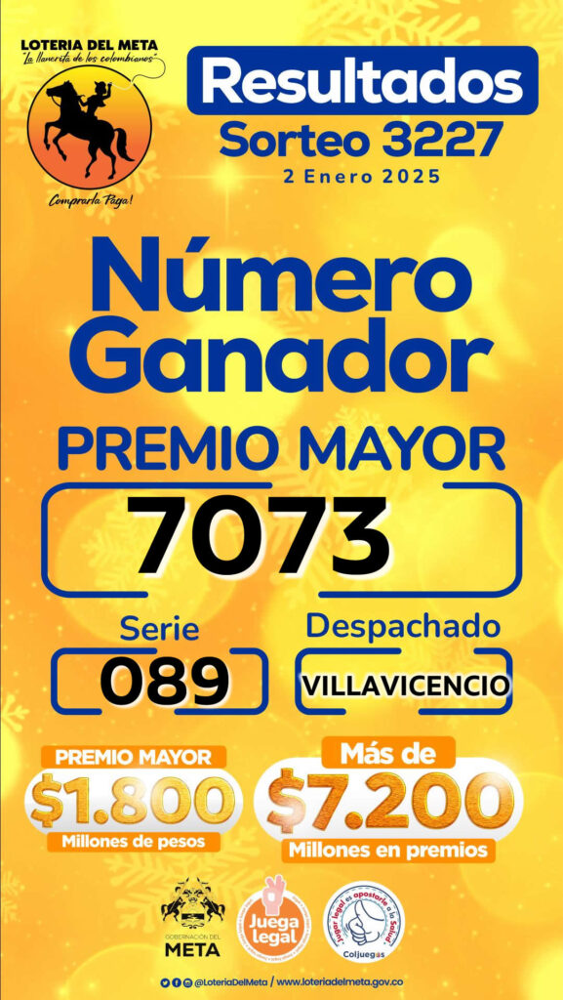

Loteria Meta: Resultados
La Lotería del Meta, es uno de los juegos de azar más reconocidos de Colombia, que tiene su origen en el departamento del Meta, situado en la región llanera, y conocido por sus vastas llanuras, su rica biodiversidad y su vínculo estrecho con el folclore y la tradición llanera. Fue fundada en 1982 con el objetivo de recaudar fondos para el desarrollo de proyectos de carácter social y cultural en la región. La Lotería del Meta, “La Llanerita de los Colombianos”, se sortea todos los miércoles a las 22:30 horas de Colombia (03:30+ GMT), a excepción de los días festivos, que se aplaza el sorteo para el siguiente día hábil.

¿Cuál es el Plan de Premios de la Lotería de Meta?
- 1 Premio mayor de $ 1.800 millones.
- 1 Seco de $300 millones.
- 1 Seco de $200 millones.
- 3 Secos de $100 millones.
- 7 Secos de $50 millones.
- 10 Secos de $20 millones.
Últimos Sorteos
- Jueves 2 de enero de 2025 7073 Serie 089
- Miércoles 18 de diciembre de 2024 1901 Serie 053
- miércoles 11 de diciembre de 2024 2935 Serie 017
- Miércoles 4 de diciembre de 2024 2401 Serie 018
- Miércoles 27 de noviembre de 2024 6874 Serie 075
- Miércoles 20 de noviembre de 2024 5443 Serie 119
- Miércoles 13 de noviembre de 2024 1956 Serie 037
El premio mayor de la Lotería del Meta es de $1.800 millones de pesos colombianos.